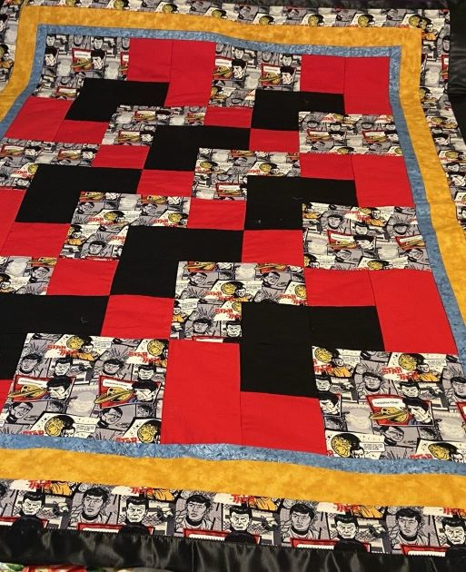
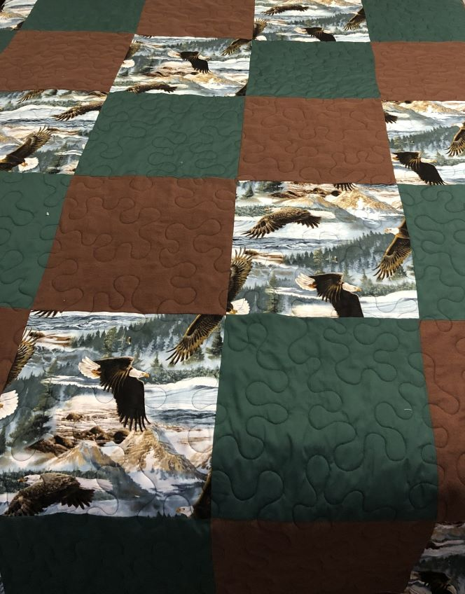
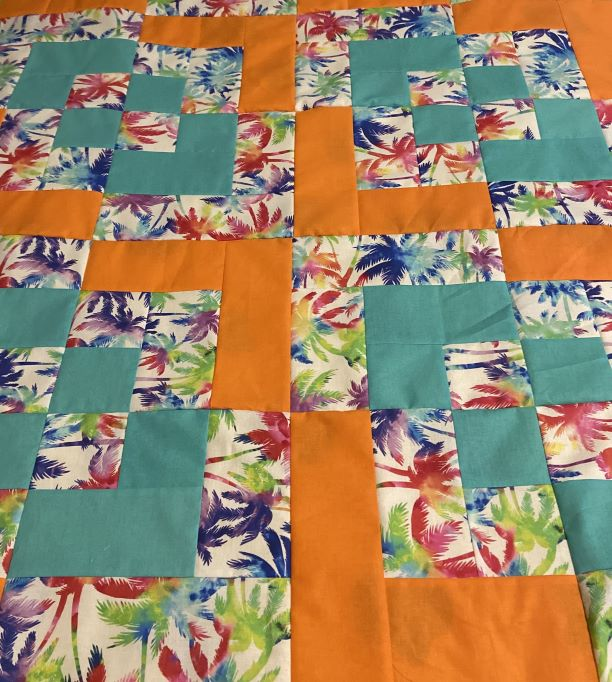

Simply Stitched was started in October 2022 after the death of
my mother. I wanted something to do that would honor my heritage
and use my skills and my collection of fabrics. I learned to sew
from my mother, grandmother, and my mothers sister. I started at
a young age collecting the scraps from my mother when she would make
our clothes (I am the oldest of ten siblings). I would make outfits
for my barbies and dolls. Mom taught me to make some doll blankets.
Then I went to middle school and took home economics and started my
adventure in sewing. Some of my friends found out that I could sew
and I would make dresses for them. In high school (1980-1983), I
continued to make my own clothes. After I married and had a little
girl (September 1986) I would make her clothes.
Mom then taught me how to make baby blankets and lap quilts (blankets).
Mom did not quilt; she tied her blankets. Her blankets brought joy to
hundreds of people. Sewing was her happy place second to serving the Lord
in her callings in church. She loved the Lord. She loved people and doing
something nice for them, especially if they were expecting a baby. Mom and
I shopped together. So, in honor of my mother, I want to finish all those
projects that have been accumulating since 1983, and share them with others.
It is my season to give back the way she did.
In June 2021, I had my first lesson in quilting and made my first quilt for
a friends daughter. She had some Star Trek fabric and wanted a blanket made.
This quilt I quilted on my sewing machine using stitch-in-the-ditch stitching.
It was a queen size quilt. October 2022, I made my second quilt for my step-daughter
for her wedding. It was a king size quilt. I learned the difference between making a
top verse quilting the quilt. My friend, Anita long-arm quilted this quilt for me. She
also taught me about quality of fabric for quilting. June 2023, I made my third quilt
for a dear friend before leaving North Carolina in October 2023, using the
stitch-in-the-ditch stitching, and completing the quilt myself.
In June 2024, I am now officially making plans and starting classes to fulfill
my purpose with Simply Stitched. Simply Stitched is becoming a dreamers reality.
The opportunity to take years of projects and fabrics and turn them into finished
products. I am looking forward to all the new friends and people that I will meet
and come to know better as I grow in this new adventure spreading my wings and
letting my imagination to bloom. I will be working on crafts, curtains, appliance
covers, bags, sheets, blankets, holiday gifts, etc. Just about anything that can
be stitched by hand or machine will be game. The field is as infinite as my
imagination can carry me. Are you ready to let go and dream?